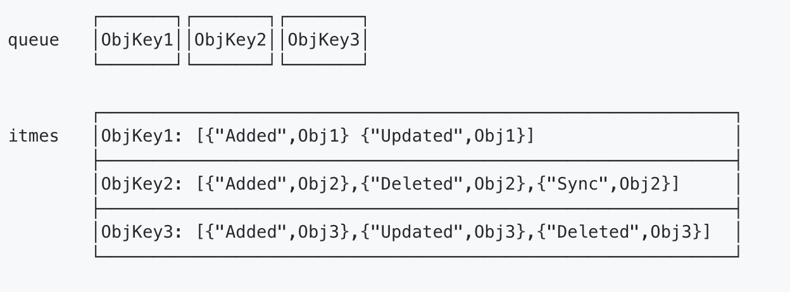
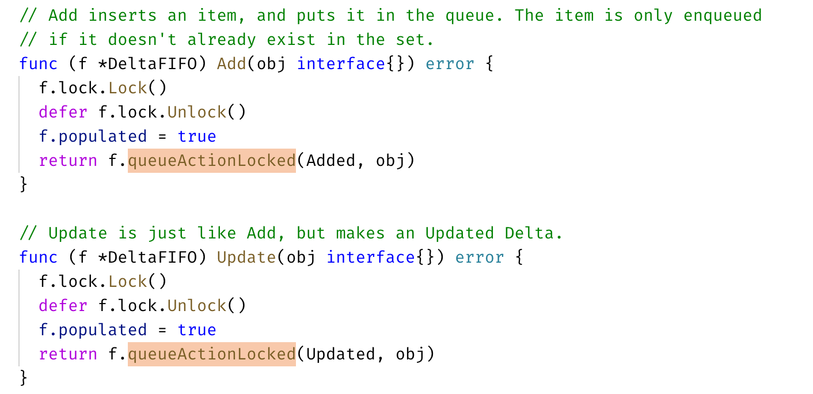
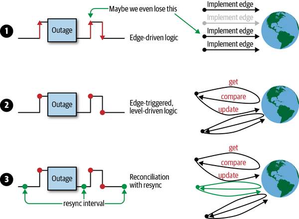
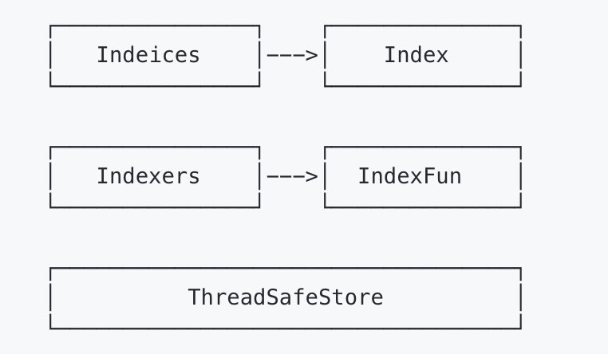

1 | Kubernetes Version: release-1.14 |
源码结构
| 目录名 | 用途 |
|---|---|
| discovery | discovery client，对 rest 客户端的进一步封装，用于发现 apiserver 所支持的能力和信息 |
| dynamic | dynamic client ，对 rest 客户端的进一步封装，动态客户端，面向处理 CRD |
| examples | 例子，比如对 deployment 创建、修改，如何选主，workqueue 如何使用等等 |
| informers | 这就是 client-go 中非常有名的 informer 机制的核心代码 |
| kubernetes | clientset 的代码，对 rest 客户端的封装，提供复杂的内置资源访问和管理能力 |
| listers | 为每个 k8s 资源提供 lister 功能，提供了只读缓存功能 |
| plugin | 提供云服务商授权插件 |
| pkg | 主要是一些功能函数，比如版本函数 |
| rest | 这是最基础的 client，其它的 client 都是基于此派生的 |
| scale | scale client 的代码，对 rest 客户端的进一步封装，用于扩容和缩容 |
| tools | 工具函数库，主要是和 k8s 相关的工具函数；提供 Client 查询和缓存 |
| util | 通用的一些工具函数，比如 WorkQueue 工作队列，Certificate 证书管理 |
| transport | 提供安全 tcp 链接 |
Client 客户端对象
首先 Rest 是最基础的客户端，RESTCLient 对 HTTP Request 进行了封装，实现 RESTful 的API 风格。ClientSet，DynamicClient 以及 DiscoveryClient 客户端都是基于 RESTClient 实现的。
- ClientSet 在 RESTClient 基础上封装了 Resource 和 Version 的管理方法，一个 Resource 可以理解为一个客户端，ClientSet 是多个客户端的集合，ClientSet 只能处理 K8s 内置资源；
- DynamicClient 可以处理 K8s 所有资源对象，包括内置资源与 CRD 自定义资源；
- DiscoveryClient 用于发现 kube-apiserver 所支持的资源组，资源版本和资源信息（Group，Version 以及 Resources）。
要使用以上四种客户端，需要先通过 kubeconfig 连接到指定的 Kubernetes API Server（确定权限粒度）。
看下面一个例子：
1 | // Code from： https://jeremy-boo.github.io/post/client-go/ |
Kubeconfig
以上面这个例子为例，读取 Kubeconfig 配置文件的关键代码在于 clientcmd.BuildConfigFromFlags，它会读取配置信息并且实例化一个 res.Config 对象，由于 kubeconfig 会有多个 kube-apiserver 集群的配置信息，因此它需要能够合并多个配置信息，该过程由 Load 函数完成。分为加载 kubeconfig 文件和合并 kubeconfig 配置信息两步：
- 加载 kubeconfig 文件；
vendor/k8s.io/client-go/tools/clientcmd/loader.go
1 | func (rules *ClientConfigLoadingRules) Load() (*clientcmdapi.Config, error) { |
- 合并 kubeconfig 配置
这部分的合并有一个优先级的关系，上面 Load 函数的 merge 部分是：
1 | // first merge all of our maps |
MergeWithOverWrite 是来自 mergo 包的一个函数，第一个参数为 src，第二个参数为 dst，merge 后的结构例子如下：
1 | src: T{X: "two", Z:{A: "three", B: 4}} |
RESTClient
一个使用 RESTClient 的例子见书本 134页。使用的关键代码为：
1 | // result := &corev1.PodList{} |
其中，restClient 为通过 kubeconfig 文件生成的 Client 对象，Get 方法封装了 HTTP get 请求，VersionParams 将一些查询选项添加到请求参数中，通过 Do 函数执行请求，并将 kube-apiserver 返回的结果（结果是一个 Result 对象）解析到 corev1.PodList 对象中。
看下面这个 Do 方法：
vendor/k8s.io/client-go/rest/request.go
1 | // Do formats and executes the request. Returns a Result object for easy response |
其中，request 方法的实现可以参见 学习 client-go 中 request 函数的实现，写得非常详细了。
ClientSet
对于 RESTClient 而言，必须指定 Resource 和 Version，ClientSet 在 RESTClient 的基础上封装了 Resource 和 Version，通过函数的方法直接调用，比如：
1 | clientset, err := kubernetes.NewForConfig(config) |
相比于 RESTClient 的多次调用，CoreV1().Pods(apiv1.NamespaceDefault) 表示对 core 核心资源组的 v1 资源版本下的 Pod 资源对象。而关于 Pod 的操作也是一层封装，比如 List 操作：
vendor/k8s.io/client-go/kubernetes/typed/core/v1/pod.go
1 | func (c *pods) List(opts metav1.ListOptions) (result *v1.PodList, err error) { |
DynamicClient
ClientSet 只能访问 k8s 自带的资源，而 DynamicClient 可以访问 CRD 自定义资源，这因为 ClientSet 预先实现每种 Resource 和 Version，内部的数据都是结构化的。而 DynamicClient 内部实现了 Unstructured，用于处理非结构化数据。
假设获取 List Pod 的操作（PodList），DynamicClient 的处理过程将所有 Resource 转化为 Unstructured 结构类型，进行相应的处理，处理完成后再将 Unstructured 的结构转换成 PodList，整个过程类似于 Go 语言的 interface{} 断言转化过程。而 Unstructured 结构类型是通过 map[string]interface{} 转换的。
⚠️ DynamicClient 不是类型安全，访问 CRD 自定义资源时，操作指针不当可能导致程序崩溃。
如书本第 140 页的例子，关键流程为：
1 | dynamicClient, err := dynamic.NewForConfig(config) |
DiscoveryClient
DiscoveryClient 用于查看 Kubernetes API Server 所支持的资源组，资源版本和资源信息。
它同样是在 ClientSet 上的一层封装，实际上，kubectl 的api-versions 和 api-resources 的命令就是通过 DiscoveryClient 实现的。
DiscoveryClient 除了可以发现所支持的资源组，版本和信息，还可以将这些内容缓存到本地，从而缓解 Kubenertes API Server 访问的压力，默认存储在 ~/.kube/cache 和 ~/.kube/http-cache 下。
如书本第 142 页的例子，关键流程为：
1 | discoveryClient, err := discovery.NewDiscoveryForConfig(config) |
- 获取 Kubernetes API Server 支持的资源组，资源版本，资源信息。
APIServer 对外暴露的是 /api 和 /apis 两个接口；DiscoveryClient 通过访问这两个接口还获取信息，核心实现位于 ServerGroupsAndResources 中的 ServerGroups 方法中：
vendor/k8s.io/client-go/discovery/discovery_client.go
1 | func (d *DiscoveryClient) ServerGroups() (apiGroupList *metav1.APIGroupList, err error) { |
通过 RESTClient 请求 /api 接口，结果存放到 APIVersions 结构体，再次通过 RESTClient 请求 /apis 接口，请求结果存放到 APIGroupList 中。最后通过 /api 检索到的资源组信息合并到 apiGroupList 中返回。
其实整个这些 API 的设计可以看出来，kubernetes 都是先声明一个对象，再将请求得到的数据通过 Into 方法装载进去，从而保证数据的“干净”性，这种设计理念贯穿了 RESTClient。
- DiscoveryClient 的本地缓存
缓存机制本身很简单，首次获取时，先查询本地缓存，不存在（没有命中）则请求 Kubernetes API Server 接口（回源）；Cache 把得到的响应数据存储本地一份并返回给 DiscoveryClient。下一次再次获取的时候，直接从本地缓存返回（命中）给 Client。默认10分钟与 APIServer 同步一次缓存，因为资源组，资源版本，资源信息几乎不变。
Informer 机制
Kubernets 中使用 http 进行通信，如何不依赖中间件的情况下保证消息的实时性，可靠性和顺序性等呢？答案就是利用了 Informer 机制。
Informer 机制架构设计

⚠️ 这张图分为两部分,黄色图标是开发者需要自行开发的部分，而其它的部分是client-go已经提供的，直接使用即可。
- Reflector：用于 Watch 指定的 Kubernetes 资源，当 watch 的资源发生变化时，触发变更的事件，比如 Added，Updated 和 Deleted 事件，并将资源对象存放到本地缓存 DeltaFIFO；
- DeltaFIFO：拆开理解，FIFO 就是一个队列，拥有队列基本方法（ADD，UPDATE，DELETE，LIST，POP，CLOSE 等），Delta 是一个资源对象存储，保存存储对象的消费类型，比如 Added，Updated，Deleted，Sync 等；
- Indexer：Client-go 用来存储资源对象并自带索引功能的本地存储，Reflector 从 DeltaFIFO 中将消费出来的资源对象存储到 Indexer，Indexer 与 Etcd 集群中的数据完全保持一致（❓ 需要关注这一步是如何达成的，以及性能上如何优化）。从而 client-go 可以本地读取，减少 Kubernetes API 和 Etcd 集群的压力。
看书本 p146 的一个例子，关键流程如下：
1 | clientset, err := kubernetes.NewForConfig(config) |
- Informer 需要通过高 ClientSet 与 Kubernetes API Server 交互；
- 创建 stopCh 是用于在程序进程退出前通知 Informer 提前退出，Informer 是一个持久运行的 goroutine；
- NewSharedInformerFactory 实例化了一个 SharedInformer 对象，用于进行本地资源存储；
- sharedInformer.Core().V1().Pods().Informer() 得到了具体 Pod 资源的 informer 对象；
- AddEventHandler 即图中的第6步，这是一个资源事件回调方法，上例中即为当创建/更新/删除 Pod 时触发事件回调方法；
- 一般而言，其他组件使用 Informer 机制触发资源回调方法会将资源对象推送到 WorkQueue 或其他队列中，具体推送的位置要去回调方法里自行实现。
上面这个示例，当触发了 Add，Update 或者 Delete 事件，就通知 Client-go，告知 Kubernetes 资源事件发生变更并且需要进行相应的处理。
- 资源 Informer
每一个 k8s Resource 都实现了 Informer 机制，均有 Informer 和 Lister 方法，以 PodInformer 为例：
1 | type PodInformer interface { |
- Shared Informer 共享机制
Informer 又称为 Shared Informer，表明是可以共享使用的，在使用 client-go 写代码时，若同一资源的 Informer 被实例化太多次，每个 Informer 使用一个 Reflector，会运行过多的相同 ListAndWatch（即图中的第一步），太多重复的序列化和反序列化会导致 k8s API Server 负载过重。
而 Shared Informer 通过对同一类资源 Informer 共享一个 Reflector 可以节约很多资源，这通过 map 数据结构即可实现这样一个共享 Informer 机制。
vendor/k8s.io/client-go/informers/factory.go
1 | type sharedInformerFactory struct { |
Reflector
Reflector 用于 Watch 指定的 Kubernetes 资源，当 watch 的资源发生变化时，触发变更的事件，并将资源对象存放到本地缓存 DeltaFIFO。
通过 NewReflector 实例化 Reflector 对象，实例化过程必须传入 ListerWatcher 数据接口对象，它拥有 List 和 Watch 方法。Reflector 对象通过 Run 行数启动监控并处理监控事件，在实现中，其核心为 ListAndWatch 函数。
- 获取资源数据列表
以 Example 的代码为例，我们获取了所有 Pod 的资源数据，List 流程如下：
1 | 1. r.ListWatcher.List 获取资源数据 |
具体的，
- r.ListWatcher.List 根据 ResourceVersion 获取资源下的所有对象数据，List 具有类似于 “断点传输“ 的功能，当传输工程中遇到网络故障中断，下次连接时，会根据版本号继续传输未完成部分，是本地缓存与 etcd 集群中保持一致。以 Example 为例，该方法调用的就是 Pod Informer 下的 ListFunc 函数，通过 ClientSet 客户端与 Kubernetes API Server 交互并获取 Pod 资源列表数据；
- listMetaInterface.GetResourceVersion 获取 ResourceVersion，即资源版本号，注意这里的资源版本号并不是指前面各个客户端的不同 kind 的不同 Version，所有资源都拥有 ResourceVersion，标识当前资源对象的版本号。每次修改 etcd 集群中存储的对象时，Kubernetes API Server 都会更改 ResourceVersion，使得 client-go 执行 watch 时可以根据 ResourceVersion 判断当前资源对象是否发生变化；
- meta.ExtractList 将 runtime.Object 对象转换为 []runtime.Object 对象。因为 r.ListWatcher.List 获取的是资源下所有对象的数据，因此应当是一个列表；
- r.SyncWith 将结果同步到 DeltaFIFO 中；
- r.setLastSyncResourceVersion 设置最新的资源版本号
- 监控资源对象
Watch 通过 HTTP 协议与 Kubernets API Server 建立长连接，接收 Kubernets API Server 发来的资源变更事件。Watch 操作的实现机制使用 HTTP 协议的分块传输编码（Chunked Transfer Encoding）（❓ 如何实现？）。——当 client-go 调用 Kubernets API Server 时，Kubernets API Server 在 Response 的 HTTP Header 中设置 Transfer-Encoding 的值为 chunked，表示采用分块传输编码，客户端收到消息后，与服务端进行连接，并等待下一个数据块。
在源码中关键为 watch 和 watchHandler 函数：
staging/src/k8s.io/client-go/tools/cache/reflector.go
1 | func (r *Reflector) ListAndWatch(stopCh <-chan struct{}) error { |
以之前的 Example 为例子，r.listerWatcher.Watch 实际调用了 Pod Informer 下的 Watch 函数，通过 ClientSet 客户端与 Kubernetes API Server 建立长链接，监控指定资源的变更事件，如下：
staging/src/k8s.io/client-go/informers/core/v1/pod.go
1 | func NewFilteredPodInformer(...) cache.SharedIndexInformer { |
r.watchHandler 处理资源的变更事件，将对应资源更新到本地缓存 DeltaFIFO 并更新 ResourceVersion 资源版本号。
1 | // watchHandler watches w and keeps *resourceVersion up to date. |
DeltaFIFO
DeltaFIFO 拆开理解，FIFO 就是一个队列，拥有队列基本方法（ADD，UPDATE，DELETE，LIST，POP，CLOSE 等），Delta 是一个资源对象存储，保存存储对象的消费类型，比如 Added，Updated，Deleted，Sync 等。
看 DeltaFIFO 的数据结构：
vendor/k8s.io/client-go/tools/cache/delta_fifo.go
1 | type DeltaFIFO struct { |
其中，Deltas 部分的数据结构如下：
staging/src/k8s.io/client-go/tools/cache/delta_fifo.go
1 | // DeltaType is the type of a change (addition, deletion, etc) |
DeltaFIFO 与其他队列最大的不同之处在于：它会保留所有关于资源对象（obj）的操作类型，队列中会存在拥有不同操作类型的同一资源对象，使得消费者在处理该资源对象时能够了解资源对象所发生的事情。queue 字段存储资源对象的 key，这个 key 通过 KeyOf 函数计算得到，items 字段通过 map 数据结构的方式存储，value 存储的是对象 Deltas 数组，结构图如下：

作为一个 FIFO 的队列，有数据的生产者和消费者，其中生产者是 Reflector 调用的 Add 方法，消费者是 Controller 调用的 Pop 方法。三个核心方法为生产者方法，消费者方法和 Resync 机制。
生产者方法
DeltaFIFO 队列中的资源对象在调用 Added，Updated，Deleted 等事件时都调用了 queueActionLocked 函数：

它是 DeltaFIFO 实现的关键：
vendor/k8s.io/client-go/tools/cache/delta_fifo.go
1 | // queueActionLocked appends to the delta list for the object. |
- 通过 KeyOf 函数计算出对象的 key；
- 将 actionType 以及对应的 id 添加到 items 中，并通过 dedupDeltas 对数组中最新的两次添加进行去重；
- 更新构造后的 Deleta 并通过 cond.Broadcast() 广播所有消费者解除阻塞。
消费者方法
Pop 函数作为消费者使用方法，从 DeltaFIFO 的头部取出最早进入队列中的资源对象数据。Pop 方法必须传入 process 函数，用于接收并处理对象的回调方法，如下：
vendor/k8s.io/client-go/tools/cache/delta_fifo.go
1 | func (f *DeltaFIFO) Pop(process PopProcessFunc) (interface{}, error) { |
首先，使用 f.lock.Lock() 确保了数据的同步，当队列不为空时，取出 f.queue 的头部数据，将对象传入 process 回调函数，由上层消费者进行处理，如果 process 回调方法处理出错，将该对象重新存入队列。
Controller 的 processLoop 方法负责从 DeltaFIFO 队列中取出数据传递给 process 回调函数，process 函数的类型如下：
1 | type PopProcessFunc func(interface{}) error |
一个 process 回调函数代码示例如下：
vendor/k8s.io/client-go/tools/cache/shared_informer.go
1 | func (s *sharedIndexInformer) HandleDeltas(obj interface{}) error { |
在这个例子中，HandleDeltas 作为 process 的一个回调函数，当资源对象操作类型为 Added，Updated 和 Delted 时，该资源对象存储至 Indexer（它是并发安全的），并通过 distribute 函数将资源对象分发到 SharedInformer，在之前 Informer 机制架构设计的示例代码中，通过 informer.AddEventHandler 函数添加了对资源事件进行处理的函数，distribute 函数将资源对象分发到该事件处理函数。
一个当时学到这里遇到的问题：【提问】DeltaFIFO 消费者方法中 process 回调函数的实现
Resync 机制
本节内容基本搬运自 【提问】Informer 中为什么需要引入 Resync 机制？
Resync 机制会将 Indexer 本地存储中的资源对象同步到 DeltaFIFO 中，并将这些资源对象设置为 Sync 的操作类型，
1 | // k8s.io/client-go/tools/cache/delta_fifo.go |
为什么需要 Resync 机制呢？因为在处理 SharedInformer 事件回调时，可能存在处理失败的情况，定时的 Resync 让这些处理失败的事件有了重新 onUpdate 处理的机会。
那么经过 Resync 重新放入 Delta FIFO 队列的事件，和直接从 apiserver 中 watch 得到的事件处理起来有什么不一样呢？还是看 HandleDeltas：
1 | // k8s.io/client-go/tools/cache/shared_informer.go |
从上面对 Delta FIFO 的队列处理源码可看出，如果是从 Resync 重新同步到 Delta FIFO 队列的事件，会分发到 updateNotification 中触发 onUpdate 的回调。Resync 机制的引入，定时将 Indexer 缓存事件重新同步到 Delta FIFO 队列中，在处理 SharedInformer 事件回调时，让处理失败的事件得到重新处理。并且通过入队前判断 FIFO 队列中是否已经有了更新版本的 event，来决定是否丢弃 Indexer 缓存不进行 Resync 入队。在处理 Delta FIFO 队列中的 Resync 的事件数据时，触发 onUpdate 回调来让事件重新处理。
关于为什么使用 Resync，这个问题在《Programming Kubernetes》的第一章详细解释了一遍，我搬运一下。主要的目的是为了不丢数据，处理 resync 机制还有边缘触发与水平获取的设计，一起来保证不丢事件、数据同步并能及时响应事件。
在分布式系统中，有许多操作在并行执行，事件可能会以任意顺序异步到达。 如果我们的 controller 逻辑有问题，状态机出现一些错误或外部服务故障时，就很容易丢失事件，导致我们没有处理所有事件。 因此，我们必须更深入地研究如何应对这些问题。
在图中，您可以看到可用的不同方案：
- 仅使用边缘驱动逻辑的示例，其中可能错过第二个的状态更改事件。
- 边缘触发逻辑的示例，在处理事件时始终会获取最新状态（即水平）。换句话说，逻辑是边缘触发的（edge-triggered），但是水平驱动的（level-driven）。
- 该示例的逻辑是边缘触发，水平驱动的，但同时还附加了定时同步的能力。

考虑到仅使用单一的边缘驱动触发会产生的问题，Kubernetes controller 通常采用第 3 种方案。
Indexer
Client-go 用来存储资源对象并自带索引功能的本地存储，Reflector 从 DeltaFIFO 中将消费出来的资源对象存储到 Indexer，Indexer 与 Etcd 集群中的数据完全保持一致。从而 client-go 可以本地读取，减少 Kubernetes API 和 Etcd 集群的压力。
了解 Indexer 之前，先了解 ThreadSafeMap，ThreadSafeMap 是实现并发安全存储，就像 Go 1.9 后推出 sync.Map 一样。Kubernetes 开始编写的时候还没有 sync.Map。Indexer 在 ThreadSafeMap 的基础上进行了封装，继承了 ThreadSafeMap 的存储相关的增删改查相关操作方法，实现了 Indexer Func 等功能，例如 Index，IndexKeys，GetIndexers 等方法，这些方法为 ThreadSafeMap 提供了索引功能。如下图：

ThreadSafeStore
ThreadSafeStore 是一个内存中存储，数据不会写入本地磁盘，增删改查都会加锁，保证数据一致性。结构如下：
vendor/k8s.io/client-go/tools/cache/store.go
1 | // threadSafeMap implements ThreadSafeStore |
items 字段存储资源对象数据，其中 items 的 key 通过 keyFunc 函数计算得到，计算默认使用 MetaNamespaceKeyFunc 函数，该函数根据资源对象计算出 <namespace>/<name> 格式的 key，value 用于存储资源对象。
而后面两个字段的定义类型如下：
vendor/k8s.io/client-go/tools/cache/index.go
1 | // Index maps the indexed value to a set of keys in the store that match on that value |
Indexer 索引器
每次增删改 ThreadSafeStore 的数据时，都会通过 updateIndices 或 deleteFormIndices 函数变更 Indexer。Indexer 被设计为可以自定义索引函数，他有重要的四个数据结构，Indexers，IndexFunc，Indices 和 Index。
看书本 159 页这个例子。
首先定义了一个索引器函数（IndexFunc），UsersIndexFunc。该函数定义查询所有 Pod 资源下 Annotations 字段的 key 为 users 的 Pod：
1 | func UsersIndexFunc(obj interfaces{}) ([]string, error) { |
Main 函数中 cache.NewIndexer 实例化了一个 Indexer 对象：
1 | index := cache.NewIndexer(cache.MetaNamespaceKeyFunc, cache.Indexers{"byUser": UsersIndexFunc}) |
第一个参数计算资源对象的 key，默认就是 MetaNamespaceKeyFunc，第二个参数是一个 Indexers 对象，如上一节展示的定义那样，key 为索引器（IndexFunc）的名称，value 为索引器函数。
通过 index.Add 添加了三个 Pod，再通过 index.ByIndex 函数查询使用 byUser 索引器下匹配 ernie 字段的 Pod 列表：
1 | erniePods, err := index.ByIndex("byUser", "ernie") |
回看这四个类型：
1 | // Indexers maps a name to a IndexFunc |
- Indexers：存储索引器，key 为 索引器名称，value 为索引器实现函数；
- IndexFunc：索引器函数，定义为接收一个资源对象，返回检索结果列表；
- Indices：存储缓存器，key 为缓存器名称，value 为缓存数据；（❓书中表示这个缓存器命名和索引器命名相对应未看懂）
- Index：存储缓存数据，结构为 K/V。
Indexer 索引器核心实现
vendor/k8s.io/client-go/tools/cache/thread_safe_store.go
1 | // ByIndex returns a list of items that match an exact value on the index function |
ByIndex 接收两个参数：indexName（索引器名字）以及 indexKey（需要检索的 key），首先从 c.indexers 查找制定的索引器函数，然后从 c.indices 查找返回的缓存器函数，最后根据需要索引的 indexKey 从缓存数据中查到并返回。
⚠️ K8s 将 map 结构类型的 key 作为 Set 数据结构，实现 Set 去重特性。
WorkQueue
还是这张图，下半部分就是我们这节要学习的 WorkQueue。

WorkQueue 的实现比 FIFO 略为复杂，它主要功能在于标记和去重。
- 有序：按照添加顺序处理元素（item）；
- 去重：相同元素在同一时间不会被重复处理，例如一个元素在处理之前被添加了多次，它只会被处理一次；
- 并发性：多生产者和多消费者；
- 标记机制：支持标记功能，标记一个元素是否被处理，也允许在处理时重新排队；
- 通知机制：ShutDown 方法通过信号量通知队列不再接收新元素，并通知 metric goroutine 退出；
- 延迟：支持延迟队列，延迟一段时间后再将元素存入队列；
- 限速：支持限速队列，元素存入队列时进行速率限制，限制一个元素被重新排队的次数；
- Metric：支持 metric 指标，用于 prometheus 监控。
WorkQueue 实现三种队列，提供三种接口，不同队列实现可应对不同的使用场景，分别介绍如下：
不理解这种命名原因，感觉很鬼……
- Interface：FIFO 队列接口，先进先出队列，支持去重机制；
- DelayingInterface：延迟队列接口，基于 Interface 接口封装，延迟一段时间后再将元素存入队列；
- RateLimitingInterface：限速队列接口，基于 DelayingInterface 接口封装，支持元素存入队列时进行速率限制。
FIFO 队列
FIFO 提供方法如下：
vendor/k8s.io/client-go/util/workqueue/queue.go
1 | type Interface interface { |
FIFO 队列数据结构如下：
1 | type Type struct { |
最主要是三个字段：queue，dirty 和 processing。queue 是实际存储元素的地方，是 slice 结构，保证元素有序；dirty 字段非常关键，结构为 set，保证去重，还能保证在处理一个元素之前哪怕被添加了多次（并发情况下）也只会处理一次；processing 字段用于标记元素是否正在被处理。存储过程如下所示：
- 通过 ADD 方法往 FIFO 插入 1，2，3 这三个元素，此时队列中的 queue 和 set 类型的 dirty 均有 1，2，3，processing 为空；
- 通过 Get 获取最先进入的元素，队列 queue 和集合 dirty 更新为 2，3，1 被放入 processing 表示正在处理；
- 处理完1元素，通过 DONE 表示元素处理完成，processing 1 被删除。
如果是刚并发下如何保证上述流程？
并发场景下，goroutine A 通过 Get 获取1，1 入 processing；同时 goroutine B 通过 ADD 添加1，此时 proccessing 已经处理相同元素，所以 1 不会添加到 queue 中，等 processing 中的 1 done 以后，1 被添加到 queue 中。
看一下对应的代码：
vendor/k8s.io/client-go/util/workqueue/queue.go
1 | func (q *Type) Add(item interface{}) { |
队列添加元素有几种状态：
- 队列关闭了，所以不接受任何数据；
- 队列中没有该元素，那就直接存储在队列中；
- 队列中已经有了该元素，这个改如何判断呢？set 类型肯定是最快的（用 map 实现，时间复杂度为 O(1)），数组需要遍历效率太低，这也是 dirty 存在的价值之一，上面的代码也通过 dirty 判断元素是否存在的；
- 队列中曾经存储过该元素，但是已经被拿走还没有调用
Done()方法时，也就是正在处理中的元素，此时再添加当前的元素应该是最新的，处理中的应该是过时的，也就是脏的。
综合上面几种状态就比较好理解 dirty 的存在了，正常情况下元素只会在 processing 和 dirty 存一份，同时存在就说明该元素在被处理的同时又被添加了一次，那么先前的那次可以理解为脏的，后续添加的要再被处理。
再来看看 Get() 函数是如何实现的：
1 | // Get() 会阻塞直到它可以返回要处理的元素。如果 shutdown=true，则调用方应该结束其 goroutine，处理完元素后，必须调用 Done() 方法。 |
最后 Done() 函数：
1 | // Done 标记元素为处理中，当被处理时如果已经又被标记为 dirty，则会将其重新添加到队列中进行重新处理。 |
延迟队列
延迟队列基于 FIFO 封装，在原有功能增加 AddAfter 方法，其原理是延迟一段时间后再将元素插入 FIFO 队列。在日常使用中，我们一般将 DelayQueue 作用于以下场景 ：
- 缓存系统 ： 当能够从 DelayQueue 中获取元素时，说该缓存已过期；
- 定时任务调度。
在 client-go 中，延迟队列使得在失败后重新排列元素更容易而不会在热循环中结束。
vendor/k8s.io/client-go/util/workqueue/delaying_queue.go
1 | // DelayingInterface is an Interface that can Add an item at a later time. This makes it easier to |
上面关于延时队列的类型定义中，waitFor是保存延时的数据结构，在这个基础上还定义了一个 waitForPriorityQueue，用来实现 waitFor 元素的优先级队列，把需要延迟的元素形成了一个队列，按照元素的延时添加的时间（readyAt）从小到大排序。
通过实现 heap.Interface 接口来实现的：
1 | // go/src/container/heap/heap.go |
只需要知道 waitForPriorityQueue 是一个有序的 slice，排序方式是按照时间从小到大排序的，根据 heap.Interface 的定义，我们需要实现 Len、Less、Swap、Push、Pop 这几个方法：
vendor/k8s.io/client-go/util/workqueue/delaying_queue.go:
1 | type waitForPriorityQueue []*waitFor |
因为延时队列利用 waitForPriorityQueue 队列管理所有延时添加的元素，所有的元素在 waitForPriorityQueue 中按照时间从小到大排序，这样延时队列的处理就会方便很多了。
来看下延时队列的实现，由于延时队列包装了通用队列，只需要查看新增的实现延时的函数即可：
vendor/k8s.io/client-go/util/workqueue/delaying_queue.go:
1 | // AddAfter 在给定的延时时间后添加元素到 workqueue 队列上 |
AddAfter() 就是简单把元素送到 channel 中，所以核心实现是从 channel 中获取数据的部分，如下所示：
vendor/k8s.io/client-go/util/workqueue/delaying_queue.go:
1 | // waitingLoop 一直运行直到 workqueue 关闭了并检查要添加的元素列表 |
其中插入元素到有序队列的实现如下所示：
vendor/k8s.io/client-go/util/workqueue/delaying_queue.go:
1 | // insert 添加元素到优先级队列中，如果已经存在队列中了则更新 readyAt 时间 |
对于延迟队列而言，最主要的字段是 waitingForAddCh，默认大小为 1000，通过 AddAfter 方法插入元素时，是非阻塞状态的，只有当插入的元素大于或者等于1000，延迟队列处于阻塞状态。waitingForAddCh 字段中的数据通过 goroutine 运行的 waitingLoop 函数持久化运行。一个延迟队列的流程如下：
- 将元素1放入 waitingForAddCh 字段，通过 waitingLoop 函数消费元数据；
- 元素延迟时间还未到达当前时间时，说明还需要延迟将元素插入 FIFO 的时间，将元素放入优先队列 waitForPriorityQueue 中，元素的延迟时间到达当前时间时，将队列插入 FIFO 中；
- 还会遍历优先队列 waitForPriorityQueue 的元素，按照上述逻辑验证时间。
限速队列
RateLimitingInterface，基于 FIFO 和 延迟队列接口封装，增加了 AddRateLimit，Forget，NumRequeues 等方法。限速队列重点不在于 RateLimitingInterface 接口，而在于提供的4种限速算法接口 RateLimiter。
vendor/k8s.io/client-go/util/workqueue/default_rate_limiters.go：
1 | type RateLimiter interface { |
在介绍四种算法前，需要了解一个概念，限速周期。一个限速周期指从执行 AddRateLimited 到执行完 Forget 方法之间的时间，如果该元素被 Forget 方法处理完，清空排队数。
四种限速算法如下：
- 令牌桶算法（BucketRateLimiter）；
- 排队指数算法（ItemExponentialFailureRateLimiter）；
- 计数器算法（ItemFastSlowRateLimiter）；
- 混合模式（MaxOfRateLimiter），将多种限速算法混合使用。
BucketRateLimiter
BucketRateLimiter 限速器是利用 golang.org/x/time/rate 包中的 Limiter 来实现稳定速率(qps)的限速器。令牌筒内部实现了一个存放 token 的“桶”，初始时“桶”是空的，token 以固定的速率往桶里填充，直到填满为止，多余的 token 会被丢弃。每个元素都会从令牌桶得到一个 token，只有得到 token 的元素才允许通过（accept），没有得到 token 的处于等待状态。图示如书本167页。
WorkQueue 在默认情况下会实例化令牌桶，代码如下：
1 | rate.NewLimiter(rate.Limit(10), 100) |
第一个参数表示每秒往桶放10个 token，第二个参数表示桶大小。假设一个限速队列插入了200个元素，通过 r.Limiter.Reverse().Delay 函数返回每个元素等待的时间（桶一开始是满的）。那么前100个元素（item0～item99）立刻被处理，后面元素的延迟时间 item100为100ms，item101为200ms……以此类推。
对应的结构体如下所示：
vendor/k8s.io/client-go/util/workqueue/default_rate_limiters.go
1 | // 根据 workqueue ratelimiter API 调整标准 bucket |
该限速器对应的限速器实现如下所示：
vendor/k8s.io/client-go/util/workqueue/default_rate_limiters.go
1 | func (r *BucketRateLimiter) When(item interface{}) time.Duration { |
ItemExponentialFailureRateLimiter
ItemExponentialFailureRateLimiter 是比较常用的限速器，它将相同元素的排队数作为指数，排队数越大，速率限制呈指数级增长，最大不超过 maxDelay。元素的排队数统计是有限速周期的，前面说够，一个限速周期指从执行 AddRateLimited 到执行完 Forget 方法之间的时间，如果该元素被 Forget 方法处理完，清空排队数。
定义如下所示：
vendor/k8s.io/client-go/util/workqueue/default_rate_limiters.go
1 | // baseDelay*2^<num-failures> |
该限速器对应的限速器实现如下所示：
vendor/k8s.io/client-go/util/workqueue/default_rate_limiters.go
1 | func (r *ItemExponentialFailureRateLimiter) When(item interface{}) time.Duration { |
使用 ItemExponentialFailureRateLimiter 限速器一般就是操作失败后又不断尝试，随着尝试次数的增加按照指数增加延迟时间，达到限速的目的。
如上代码所示，如果不存在相同元素，所有元素的延迟为 baseDelay；而在同一限速周期内，如果存在相同元素，那么相同元素的延迟时间指数级增长，最长不超过 maxDelay。
ItemFastSlowRateLimiter
最简单的一种限速算法，原理是：限制一段时间某元素内允许通过的元素数量，比如一分钟只允许100个同种，超过久不允许。在这个思想基础上扩展了 Fast 和 Slow 速率。
vendor/k8s.io/client-go/util/workqueue/default_rate_limiters.go
1 | // 以短延迟重试，达到阈值后开始用长延迟 |
每当 AddRateLimited 方法插入新元素时，failures 会为该字段加1，fastDelay 和 slowDelay 用于定于 fast，slow 速率，核心代码如下：
vendor/k8s.io/client-go/util/workqueue/default_rate_limiters.go
1 | func (r *ItemFastSlowRateLimiter) When(item interface{}) time.Duration { |
MaxOfRateLimiter
多种限速算法混用，返回其中的最大值：
vendor/k8s.io/client-go/util/workqueue/default_rate_limiters.go
1 | type MaxOfRateLimiter struct { |
vendor/k8s.io/client-go/util/workqueue/default_rate_limiters.go
1 | func (r *MaxOfRateLimiter) When(item interface{}) time.Duration { |
限速队列实现
限速队列的接口定义如下所示：
vendor/k8s.io/client-go/util/workqueue/rate_limiting_queue.go
1 | // RateLimitingInterface 将限速的元素添加到队列中的一个接口 |
该限速器接口对应的实现如下所示：
vendor/k8s.io/client-go/util/workqueue/rate_limiting_queue.go
1 | // rateLimitingType wraps an Interface and provides rateLimited re-enquing |